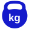

Douala · Afrique
Kenjitech
Nousconcevonspour votre développement.
KENJITECH est un intégrateur de solutions industrielles. Nous fournissons et installons le matériel, les cartes et les logiciels, puis nous les intégrons sur vos sites : supervision industrielle, systèmes de péage, pesage et métrologie, thermométrie, thermographie infrarouge, contrôle d'épaisseur par jauges à ultrasons, électricité et informatique. Nous assurons aussi la maintenance de tous ces systèmes.
Qui sommes-nous
Technologies et services innovants pour votre développement
ETS KENJITECH est un intégrateur de solutions installé à Douala. Il accompagne les industriels, les ports, les mines, l'agro-industrie et les administrations, de l'étude à la mise en service puis à la maintenance.
Sa force : réunir dans une même équipe la conception du matériel, le développement des logiciels, la métrologie, l'électricité et l'intégration. KENJITECH conçoit ses propres cartes d'entrées/sorties, ses coffrets et ses logiciels de supervision, de péage et de pesage, comme SoftWEIGHT. Un seul interlocuteur suit votre projet de bout en bout.
Intégration de solutions
Capteurs, automates, cartes I/O, caméras, réseaux et logiciels réunis en un système qui fonctionne, mis en service et suivi.
Conception de produits innovants
Cartes d'entrées/sorties, coffrets électriques et de commande, équipements de péage, logiciels de supervision, de péage et de pesage, pensés pour les sites africains : coupures de réseau, chaleur, poussière, sites éloignés.
Expertise technique
Métrologie, pesage industriel, thermométrie, thermographie infrarouge, ultrasons, électricité et informatique, réalisés par nos équipes.
Fournitures
Équipements marins, industriels et de traçabilité, livrés, installés et garantis.
Nos services
Ce que nous faisons sur vos sites
Chaque service peut être commandé seul ou combiné dans un projet clé en main : étude, fourniture, installation, mise en service et maintenance.
Intégration de solutions
Nous réunissons capteurs, automates, cartes I/O, caméras, réseaux et logiciels en un système complet, puis nous le mettons en service sur votre site.
- Étude, câblage, programmation, essais
- Un seul interlocuteur
Supervision industrielle
Cartes d'entrées/sorties et logiciels de supervision : visualisation du process, capteurs de température, pression, poids, humidité, commande des actionneurs.
Voir la démonstration ↓ ConceptionSystèmes de péage
Matériel et logiciel de péage manuel, semi-automatique ou automatique : capteurs, coffrets électriques et de commande, périphériques, gestion des péages.
Voir la démonstration ↓Pesage et traçabilité
Conception, installation et maintenance de ponts-bascules, pèse-essieux, pèse-palettes, bascules de circuit, ensacheuses et convoyeurs peseurs.
- Logiciel de pesage SoftWEIGHT
Métrologie et thermométrie
Vérification et maintenance des instruments de pesage et de température, capteurs et chaînes de mesure.
Thermographie infrarouge
Inspection par caméra thermique des coffrets et armoires électriques, tableaux, groupes électrogènes, moteurs et transformateurs, pour repérer les points chauds avant la panne.
Voir la démonstration ↓ ContrôleÉpaisseur par jauges à ultrasons
Mesure de l'épaisseur des tôles, cuves, tuyauteries, coques et structures métalliques, sans démontage, pour suivre la corrosion et l'usure.
Voir la démonstration ↓Installations électriques
Études, coffrets et armoires, câblage, protection électrique d'équipements sensibles comme les scanners RX.
Systèmes et logiciels
Logiciels métier, réseaux, RFID et identification, lecteurs QR, caméras et LAPI, développement sur mesure.
Équipement marin
Éclairage et projecteurs marins, équipements de surveillance et de navire, livrés et installés.
Équipement industriel
Instruments de mesure, coffrets, capteurs, lecteurs et équipements de traçabilité.
Produits sur mesure
De l'idée au prototype puis à la série : équipements, systèmes et logiciels adaptés à votre besoin.
Supervision industrielle
Voir et piloter tout votre process
KENJITECH conçoit ses propres cartes d'entrées/sorties et développe ses logiciels de supervision. Vos capteurs de température, de pression, de poids, d'humidité et de niveau remontent sur un même écran, et vous commandez vos pompes, vannes et résistances à distance.
Essayez : ouvrez la vanne, démarrez la pompe ou la chauffe, ou passez en mode automatique. Les mesures évoluent et la carte I/O allume ses voies en temps réel.
- Cartes I/O : entrées et sorties tout-ou-rien et analogiques
- Synoptiques, alarmes, historiques et courbes
- Commande des actionneurs et sécurités (marche à sec, trop-plein)
- Liaisons Modbus, RS485 et TCP/IP vers automates, ERP et SoftWEIGHT
Systèmes de péage
Du capteur au logiciel de péage
KENJITECH conçoit le matériel des voies de péage : capteurs, coffrets électriques, coffrets de commande et périphériques d'entrées/sorties. Nous développons aussi le logiciel de gestion des péages, de la voie jusqu'au poste central.
Essayez : choisissez un mode et suivez chaque véhicule. En mode manuel ou semi-automatique, c'est vous l'opérateur.
- Manuel : l'opérateur classe le véhicule et encaisse
- Semi-automatique : les capteurs classent le véhicule, l'opérateur valide
- Automatique : badge RFID ou lecture de plaque LAPI, la barrière s'ouvre seule
- Logiciel : tickets, recettes, comptages par classe, rapports et supervision des voies
Thermographie infrarouge
Voir la panne avant qu'elle n'arrive
Un serrage desserré, une phase surchargée ou un disjoncteur fatigué chauffent bien avant de lâcher. La caméra thermique les rend visibles, sans couper l'installation et sans contact.
Essayez : passez la caméra sur le coffret électrique. La température s'affiche sous le réticule. Un point chaud se cache sur l'un des départs.
- Coffrets, armoires et tableaux électriques
- Groupes électrogènes, moteurs, alternateurs
- Transformateurs, jeux de barres, câbles
- Rapport avec images, températures et actions à mener
Contrôle d'épaisseur par jauges à ultrasons
Mesurer ce qui reste de métal
La sonde envoie une onde ultrasonore dans la paroi. L'écho revient du fond : son temps de parcours donne l'épaisseur exacte, sans percer ni démonter. On suit ainsi la corrosion des cuves, des tuyauteries et des coques.
Essayez : déplacez la sonde le long de la tôle. Une zone corrodée se cache sous la peinture.
- Cuves, réservoirs, tuyauteries, chaudières
- Coques et structures de navires, charpentes
- Cartographie des épaisseurs et rapport de mesures

Notre logiciel
SoftWEIGHT
Le logiciel de pesage et de traçabilité leader en Afrique centrale, conçu par KENJITECH. Il gère ponts-bascules, ensacheuses, convoyeurs peseurs, bascules de circuit, pèse-essieux, pèse-palettes et balances. Il existe en plusieurs formules, qui évoluent avec votre site :
Défilez · notre méthode
De l'étude à la maintenance
Écoute et diagnostic
Visite de site, relevés, mesures et analyse de vos contraintes.
- Audit, thermographie, mesures d'épaisseur
- Rapport de diagnostic
Conception
Solution technique, plans, choix des équipements et du logiciel.
- Plans mécaniques et électriques
- Offre technique et financière
Fourniture
Approvisionnement des équipements, contrôle à réception, garantie.
- Équipements marins et industriels
- Matériel de traçabilité
Installation et mise en service
Pose, câblage, intégration, essais et formation des équipes.
- Procès-verbal de réception
- Formation des utilisateurs
Maintenance
Contrats de suivi, contrôles périodiques et assistance à distance.
- Inspections thermographiques annuelles
- Assistance et interventions sur site
Secteurs
Là où nous intervenons
Références
Ils nous font confiance
Industrie, ports, mines, agro-industrie, bois, BTP, aviation civile et maritime, partout en Afrique.
Aviation civile : électricité, scanners à rayons X et onduleurs.
Port Autonome de Douala.
Port de Douala, avec SoftWEIGHT.
Utilisateur de SoftWEIGHT.
Utilisateur de SoftWEIGHT.
SoftWEIGHT, supervision et plateforme web.
Trois sites et module grumes.
Deux sites, tickets avec QR code.
Pesage sur pont-bascule.
Pesage par lot, analyses et VGM à l'export.
Pesage par lot, toute la comptabilité, préfinancements et financements.
Et bien d'autres.
Zone d'intervention
Partout au Cameroun et en Afrique
Nos équipes se déploient partout en Afrique pour l'installation, la mise en service et la maintenance, avec une assistance à distance au quotidien.
Entreprise
Un dossier en règle
Contact
Parlons de votre projet
Une inspection thermographique, une campagne de mesures d'épaisseur, une installation de pesage ou un projet clé en main : décrivez votre besoin.